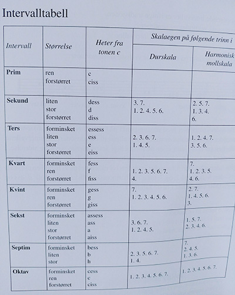

Om opptaksprøven
http://www.hf.uio.no/imv/studier/opptak/
Første del: Generell musikkteori
Identifisere intervaller og dur- og mollskalaer.
Intervall (latin intervallum = mellomrom) er avstanden mellom to toner, enten i samklang (harmoniske) eller i rekkefølge (melodiske).
Samme navn som latinske ordenstallene: prim, sekund, ters, kvart, kvint, sekst, septim og oktav.
Alle intervaller med S i navnet er store, de andre er rene.
Oversikt
| Navn | Stor / Ren | Ant. trinn |
|---|---|---|
| Prim | Ren | ingen |
| Sekund | Stor | ett helt |
| Ters | Stor | to hele |
| Kvart | Ren | to hele og ett halvt |
| Kvint | Ren | tre hele og ett halvt |
| Sekst | Stor | fire hele og ett halvt |
| Septim | Stor | fem hele og ett halvt |
| Oktav | Ren | fem hele og to halve |
Prim (Ren): Samme tone
Sekund (Stor): 1 trinn
Ters (Stor): 2 trinn
Kvart (Ren): 2 + 1/2 trinn
Kvint (Ren): 3 + 1/2 trinn
Sekst (Stor): 4 + 1/2 trinn
Septim (Stor): 5 + 1/2 trinn
Oktav (Ren): 8.
Større intervaller enn oktav
none = oktav + sekund
desim = oktav + ters
undesim = oktav + kvart
duodesim = oktav + kvint
tredesim = oktav + kvint
Intervallenes omvendinger
Legg dypeste tonen opp en oktav eller høyeste ned en oktav
- Rene intervaller blir rene
- Store intervaller blir små
- Små intervaller blir store
- Forstørrede intervaller blir forminskede
- Forminskede intervaller blir forstørrede
Hvordan et intervall bestemmes
Finn grunnintervallet uten fortegn. Start med nederste note og tell antall linjer og mellomrom til øverste.
Sjekk så fortegn som gjør intervallet stort eller lite, forstørret eller forminsket.
Eks: ciss-ass er uten fortegn en stor sekst (6 trinn). Ved at a senkes blir det en liten sekst. Når c også heves, blir det en forminsket sekst.
Metode 2:
Må kunne alle faste fortegn i alle durskalaer
Bruk nederste note som utgangspunkt. Hvis en G, så er det G-dur. Tell opp til øverste. Da ser man intervallet i forhold til skalaen.
Konsonerende og dissonerende intervaller
Konsonerende intervaller
rene primer, oktaver og kvinter
store og små terser og sekster
Dissonerende intervaller
store og små sekunder og septimer
alle forstørrede og forminskede intervaller

Referanser
Benestad, Finn. (2016). Musikklære. ed. City: Publisher, pp.27-
Bestemme grunnpuls og taktart i musikkeksempler du får høre.
Notere rytmer (med noter eller i et noteverdioppsett).
Vise grunnleggende kjennskap til noter (gjenkjenne notebilder).
Identifisere tonene i akkorder (med noter eller ved å angi tonene på en tangentoversikt - piano/keyboards).
Andre del: Notasjon
Vise elementære ferdigheter i å lese og skrive noter (bass og diskantnøkkel).
Tredje del: Produksjon
Gjenkjenne instrumenter i et sammensatt lydbilde.
Gjenkjenne elementære effekter og vise elementær kunnskap om lyd, opptak og produksjonsverktøy.